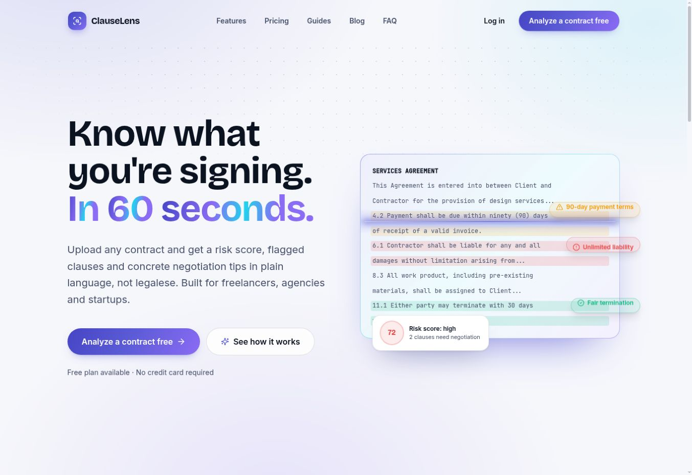
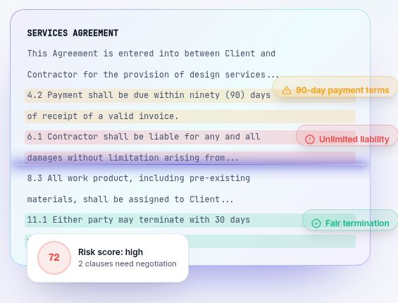

ClauseLens
Een heldere eerste blik
op de kleine letters.

Complexe inhoud.
Een helder begin.
Voor freelancers, bureaus en startups die willen begrijpen waar ze voor tekenen. ClauseLens presenteert contractanalyse in gewone taal, met aandacht voor bepalingen die een tweede blik verdienen.
Bekijk ClauseLens liveEerst begrijpen, dan beginnen.
De introductie benoemt direct voor wie het product is en wat je ermee kunt. Naast de primaire analyseknop staat een rustige route naar meer uitleg. Zo heeft ook een bezoeker die eerst wil rondkijken een logische volgende stap.
De uitleg staat bij de tekst.
In het contractvoorbeeld staan markeringen en korte labels direct bij de betreffende bepaling. De samenvatting geeft overzicht; de tekst ernaast geeft context. Kleur wordt aangevuld met woorden en iconen.
{kind=link}

Een abstract idee
wordt zichtbaar.
Het voorbeeld laat zien hoe contracttekst, aandachtspunten en een samenvatting bij elkaar komen. Daardoor krijgt de bezoeker al op de homepage een beeld van de manier waarop informatie wordt gepresenteerd.
Screenshot van de openbare homepage met demonstratiegegevens, geen analyse van een klantcontract.